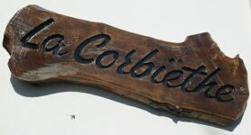
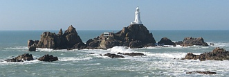
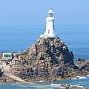
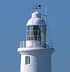
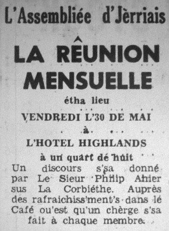

La Corbiéthe, ch'est la carre du Seur-Vouêt d'Jèrri en la Pâraisse dé Saint Brélade. Eune corbiéthe à l'originne 'tait eune pliaiche où'est qu'i' d'meuthaient les corbîns. Au jour d'aniet nou n'vait pon hardi d'corbîns par là à compather d'auve les mauves.
Les rotchièrs d'La Corbiéthe ont 'té un dangi pouor les navithes dépis les touos vièrs temps. Ch'est en tchi i' faut vither en touônnant par chutte carre-chîn d'l'Île et auve les mathées (et tchiquefais la bliâse) même les cap'taines auve hardi d'expéthience pouvaient lus trouver êchoués. S'lon les r'cords lé preunmié têmouongnage d'un navithe naûfragi à La Corbiéthe 'tait en 1309, et chenna continnuait rédguliéthement même entréchîn 1859 quand l'stînme Express fut naûfragi là.

Eune veue fut bâtie sus les rotchièrs en 1873, la preunmié veue bâtie en chînment dans l's Îles Britanniques. Achteu ch'est un sŷmbole dé Jèrri tch'appathaît sus des pièches et des billes, et sans doute ch'est iun des bâtisses les pus photographiés en Jèrri, sustout au couochant quand les couleurs du ciel et la silhouette d'la veue peuvent êt' mangnifiques à vaie.
L's Allemands bâtîdrent des bunkèrs à La Corbiéthe duthant l'Otchupâtion, et eune tou étout tchi fut faite sèrvi pouor bein d's années auprès la dgèrre pouor l'radio mathitînme.
Lé c'mîn d'fé du Vouêt soulait arriver à La Corbiéthe et nou peut vaie acouo la pliateforme et la stâtion transformée en maîson privée. Lé c'mîn à piêtons et à bikes tchi rempliaichit lé c'mîn d'fé va d'La Corbiethe à Saint Aubîn (ou d'bort' en aut' s'lon san chouaix) et pâsse quâsîment endrait la vielle stâtion d'La Corbiéthe un grand pèrron tch'est un monument d'l'Âge dé Pièrre: La Tabl'ye des Marthes. Lé nom d'chutte pièrre est un mio mystéthieux - ch'est-i' d'la gamme ès os jouée par des mousses sus chutte tabl'ye en pièrre ou ch'est-i' des "martythes" (ch'est à dithe: des têmouains) ès contrats pâssés solennellement sus chutte tabl'ye au temps pâssé?
|  |  |  |

Viyiz étout: